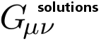

Gmunu Solutions is a pioneer in bringing leading-edge computing tools
to your enterprise to achieve scalable and sustainable solutions.
Gmunu (Gee-mew-new) provides high-performance computing, low cost-of-ownership solutions to
business and engineering problems. We will work with you to develop a unique toolkit of algorithms,
software, and hardware to increase performance and higher quality solutions. Our team, with active R&D
expertise in academia and industry, specializes in a broad variety of high-performance, distributed,
and optimized computational algorithms for simulation, including continuous and discrete problems,
stochastic problems, Bayesian networks, Markov chain Monte Carlo, natural language processing,
human language technology, cloud computing, virtualization. We address a broad range of customers,
from local, state, and government to small businesses, providing solutions to enhance legacy systems
and to achieve scalable, sustainable and methodologies to your enterprise.